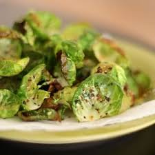
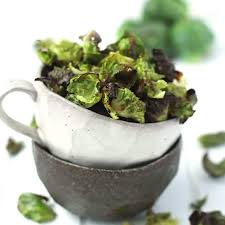

|  |  | |
|---|
Directions
Step 1
Preheat oven to 400°. In a large bowl, toss brussels sprouts with oil, Parmesan, and garlic powder and season with salt and pepper. Spread in an even layer on a medium baking sheet.
Step 2
Bake 10 minutes, toss, and bake 8 to 10 minutes more, until crisp and golden. Garnish with more Parmesan and serve with caesar dressing for dipping.
FOR AIR FRYER
Step 1
In a large bowl, toss brussels sprouts with oil, Parmesan, and garlic powder and season with salt and pepper. Arrange in an even layer in air fryer.
Step 2
Bake at 350° for 8 minutes, toss, and bake 8 minutes more, until crisp and golden.
Step 3
Garnish with more Parmesan and serve with caesar dressing for dipping.